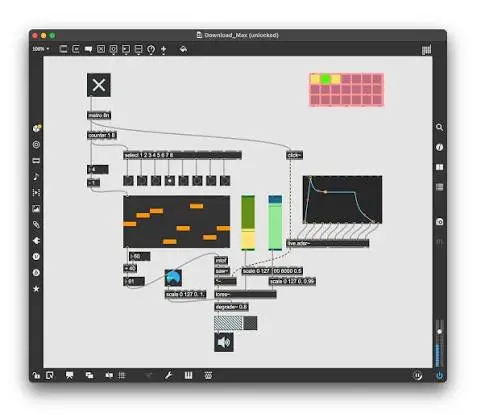
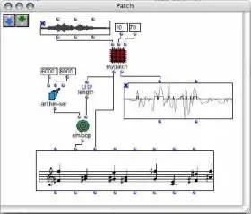
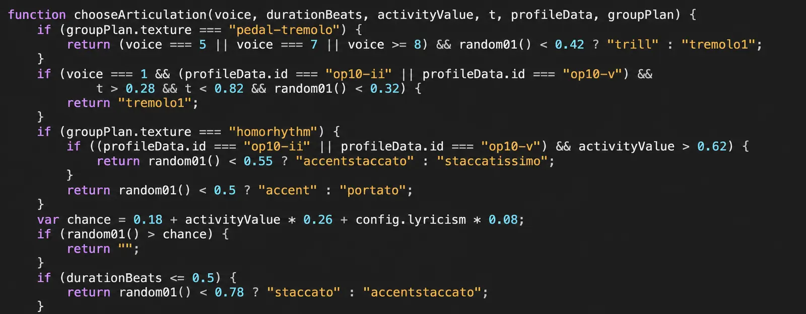

Visual systems
A working space for composition, psychoacoustics, spectral thinking, and algorithmic systems — where listening becomes a method and code becomes an instrument.
Scroll to enter ↓

Four directions currently shaping the lab. Each will later open into its own projects, notes, audio, and source material.
Harmony understood through timbre, resonance, and the inner life of sound rather than a fixed grid of notes.
How hearing constructs pitch, distance, space, fusion, and difference — and how perception can shape musical form.
Rules, probabilities, and generative structures that behave less like automation and more like a musical partner.
Sound as architecture: movement, placement, depth, and the changing relationship between listener and room.
We explore how sound becomes musical material: analysing spectra and resonance, designing synthesis and spatial processes, generating structures with algorithms, and translating those results into notation. Max/MSP lets us hear and manipulate processes in real time; OpenMusic develops their compositional logic; code connects analysis, experimentation, and performance.

Max/MSP is a visual programming environment for building interactive sound systems. We use its real-time audio tools to explore spectral analysis, synthesis, transformation, spatialisation, and playable digital instruments.

Developed at IRCAM, OpenMusic is a visual programming environment for computer-assisted composition. We explore harmonic and spectral structures, algorithmic transformations, and the translation of calculated musical material into notation.

Code as a compositional environment: generators, analysis tools, live synthesis, research-informed models, and carefully directed AI experiments.